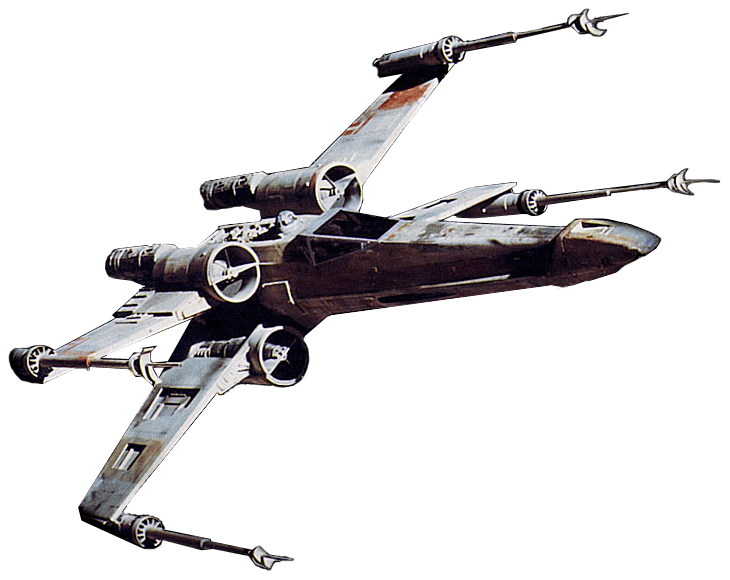
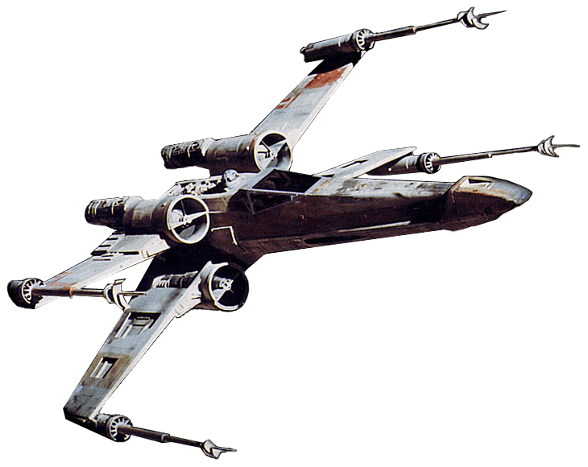

Naboo
Histoire de la planète
 

Naboo était une planète située dans la Bordure Médiane, dans le secteur Chommell.
Les humains et les Gungans y cohabitaient bien qu'ils s'évitaient mutuellement, jusqu'à leur coalition contre les troupes d'invasion de la Fédération du commerce en 32 av.BY.
Les premiers vivaient dans des villes à l'architecture vénitienne, les seconds vivaient dans des cités sous-marines d'architecture de genre art nouveau.
La capitale de Naboo était la cité de Theed, située en bordure d'une haute falaise.
Le Gungan est une espèce intelligente originaire de Naboo.
Cet amphibie de 2 m de haut est réputé pour la formation d'importantes colonies sous-marines.
Sa tête se caractérise par de longues oreilles et un bec large. Sa longévité atteint 65 ans. Il parle le basic, mais avec un accent particulièrement prononcé.
Il existe deux races de Gungans : l'otolla, plutôt élancé, et l'ankura, plutôt fort10. Par exemple, le sénateur Jar Jar Binks est un otolla alors que le chef Boss Nass est un ankura.
Une autre espèce reptilienne intelligente habitait Naboo avant sa colonisation par les humains, mais disparait à l'issue d'un conflit avec les Gungans.
Après avoir colonisés la planète en 4 000 av. BY environ30, les humains mettent en place une société encourageant le développement artistique pour chacun des habitants,
faisant de Naboo l'une des planètes comptant le plus de peintres et de musiciens de la galaxie. Les humains de la planète Naboo sont ainsi un peuple d'esthètes, portés sur les arts et la philosophie.
Ils possèdent tout de moins une technologie avancée, et une flotte composée de vaisseaux de combats lisses et chromés.
Le peuple humain de Naboo élit la plupart de ses dirigeants, notamment son souverain, tous les quatre ans ce mandat n'est renouvelable qu'une seule fois.
Le peuple naboo élit traditionnellement une jeune femme pour diriger la planète. La citoyenneté des habitants, ainsi que leur passage à la maturité ne se fait pas à un certain âge,
mais à l'issue d'un test prouvant leur maturité intellectuelle, ce qui explique la présence de jeunes adolescentes à la tête de la planète.
Les reines de Naboo sont accompagnées de suivantes, ressemblant fortement à cette dernière, responsables de sa protection et possibles doublures.
Elles sont également des gardes du corps entraînées au combat, et des politiciennes de haut niveau, devant être capable de remplacer la reine dans n'importe quelle situation.
Bien qu'ayant un rôle majoritairement diplomatique, les souverains de Naboo sont également entraînés au combat, pour être capable de mener leurs troupes.
La capitale humaine, Theed, initialement un village de fermiers, se situe en bordure d'un plateau duquel se déverse en cascade un fleuve à affluents souterrains, de par la géologie particulière de Naboo.
Ce fleuve, Solleu, est accessible presque partout à Theed, il permet aux marchands naboo de rencontrer les Gungans et de commercer. Cette capitale représente également le centre culturel de la planète.
Le palais royal de Theed se situe au bord de la falaise des chutes du Solleu. Il possède une grande importance symbolique, puisqu'il s'agit du point d'arrivée des défilés.
Il remplit en parallèle une fonction politique, en hébergeant le souverain de Naboo et en permettant la réunion des membres du Conseil royal de la planète.
Bien qu'imposant, le palais manifeste une architecture pointilleuse et ornée de délicats détails soignés.
La place du palais, principale avenue de Theed, relie le palais à la cour royale41.
Caractéristiques de la planète
| Nom | Diamètre | Type | Paysages | Atmosphère | Population | Capitale |
|---|---|---|---|---|---|---|
| Naboo | 12 120 km | Tellurique |
|
Respirable | 600 000 000 | Theed |